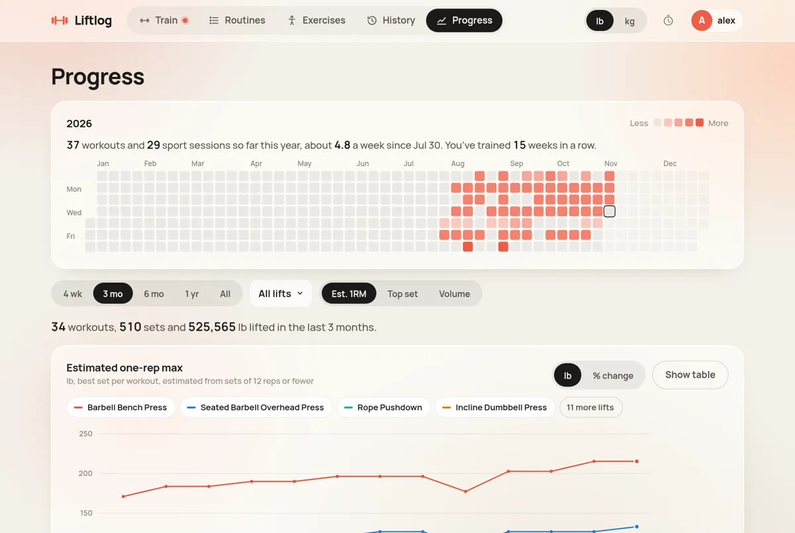
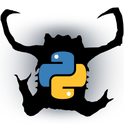
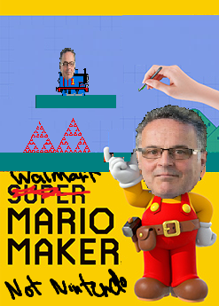
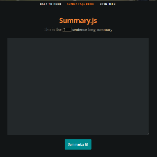
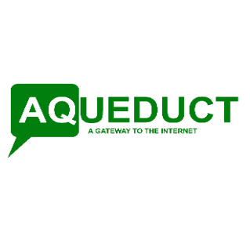
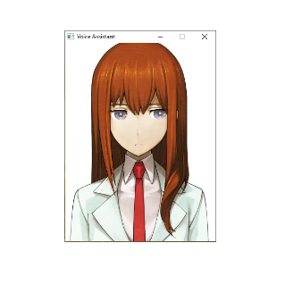

Fullstack Developer · Vancouver, BC
Hi, I'm Lian Duan.
I build dependable systems end to end: event-driven payment services, high-availability airport tracking, and the React front ends on top. Outside of work I hike and take photos.
01 — About
Full-stack by trade, curious by default.
I studied Computer Science (with Co-op) at the University of British Columbia, and since then I've worked in real estate, airport logistics, enterprise SaaS, sports tech and fintech. I care most about sturdy systems: event-driven services that recover on their own, monitoring that turns hours of debugging into minutes, and APIs that are pleasant to build on.
Right now I'm an Intermediate Fullstack Developer at the Real Estate Board of Greater Vancouver, working on payment processing, search and the member self-service platform. Before that I spent two years at Brock Solutions building high-availability baggage tracking for JFK and YVR.
Focus areas
- ⚡Event-driven back endsAzure Event Bus, Functions, Redis
- 🧩High-availability systemsFailover clustering, airport scale
- 🖥️Full-stack productsReact, Next.js, search, dashboards
- 🛡️Secure paymentsPCI compliance, audit logging, monitoring
02 — Experience
Where I've worked.
-
RE CurrentReal Estate Board of Greater Vancouver
Intermediate Fullstack Developer
I work on payments, search and the member self-service platform for Greater Vancouver's realtor association, and I mentor junior developers.
88%fewer payment failures$400K+revenue recovered monthly15k+members on the platform45k+entries made searchable- Account updater service: event-driven propagation of PCI-compliant card updates from JPMorgan Chase through internal systems, using Azure Event Bus, Redis and Azure Functions.
- Payment observability: audit logging, error alerts and Azure Log Analytics, so payment issues are diagnosed in minutes instead of hours.
- Member platform: profile management, data dashboards and subscriptions, architected end to end.
- Content search: Sanity.io CMS indexed into Azure AI Search by serverless functions, with a Next.js front end.
- Onboarding docs: environment setup and back-end best practices that shorten ramp-up for new developers.
-
BS Brock Solutions
Software Development Engineer
Two years building the software that tracks and routes checked bags through JFK and Vancouver International Airports.
Millionstransactions a day4,000+misroutes fixed daily$40Klicensing saved per year- High-availability tracking: distributed systems on SQL Server, ASP.NET Core and Windows Server failover clustering.
- Live baggage map: a real-time, event-based map with replay, so operators can correct and audit misrouted bags.
- Emulation tooling: replaced third-party software with multi-user debugging tools in C#, ASP.NET and WinForms.
- Stakeholder demos: presented microservice features to senior management at JFK International Airport.
-
SAP SAP
Agile Developer Intern · HANA & Analytics
Kept S/4HANA microservices secure and shippable on the infrastructure side.
95%code coverage reached17.5k+companies on S/4HANA- Security patches: CVE fixes, API refactors and defect fixes across HANA microservices.
- Deployment dashboard: one view of every service's deployment status for the team.
-
F FORM
Web Software Developer Intern
Back-end developer for the smart swim goggles' companion app.
45k+active swimmers served- Mobile app APIs: REST routes built on TypeScript, MySQL and AWS.
- User badges: "Verified" and "Professional" badges end to end with Express and Sequelize.
- Release alerts: AWS Lambda and SES emails that flag unintended firmware releases.
-
LD LedgerDocs
Web Applications Developer Intern
Made a bookkeeping document platform read invoices on its own and stay up under load.
99.7%less server CPU load30k+invoices read each quarter- OCR pipeline: Tesseract built into the PHP (CodeIgniter) codebase to parse invoice photos.
- Queue workers: spread heavy jobs across peak hours and ended CPU-overload crashes.
- SMS uploads: prototyped sending documents by text with Twilio.
03 — Projects
Things I've built.
New 2026 · Featured
LiftLog
A self-hosted lifting tracker. Build routines from a body map, log workouts set by set with reps already filled in, and chart estimated one-rep maxes over time. Cardio and sports are logged too.
- Multi-user accounts with scrypt-hashed passwords, rate-limited sign-in and admin user management
- Lock-screen rest-timer alerts delivered by Web Push when the app isn't on screen
- Ships as a small standalone Docker image running as a non-root user, with SQLite and a health check

2023 · UBC CPSC 447
SafeCracker
An interactive D3 visualization of NordVPN's top 200 passwords in each country. A choropleth map shows each country's average time to crack, and linked charts plot each password's crack time against how many people use it.

2022
PyeadCrab
A Python CLI for static and dynamic code analysis. It processes the AST to find code clusters, uses Markov models to predict call likelihood, and draws the structure as D3 graphs.

2022
Walmart Mario Maker
A domain-specific language for writing 2D platformer levels, with enemies, doors, coins and conditional events, played in the browser.

2019
Summary.js
A paragraph summarizer under 10 KB for the browser and Node. It scores sentences with LexRank and RAKE keywords.

nwHacks 2020
Aqueduct
An SMS chatbot that brings web content to feature phones in places with little or no internet access.

2018
Amadeus
A prototype voice assistant built on IBM Watson speech-to-text, with weather, Wikipedia and small-talk commands.
04 — Travel
Places I've been.
- 2024 and later
- 2016 – 2023
- Before 2016
- Home
05 — Toolkit
Skills & background.
Languages
Frameworks & Libraries
Tools & Platforms
Education
B.Sc. Computer Science, Co-op
Award
BC Achievement Scholarship
Leadership